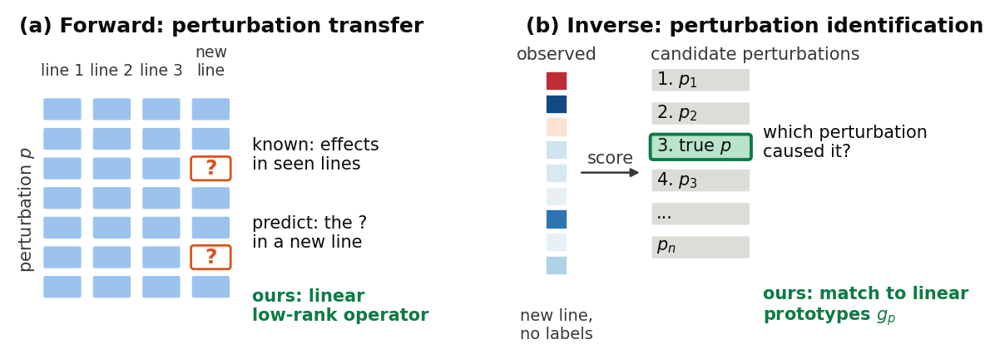
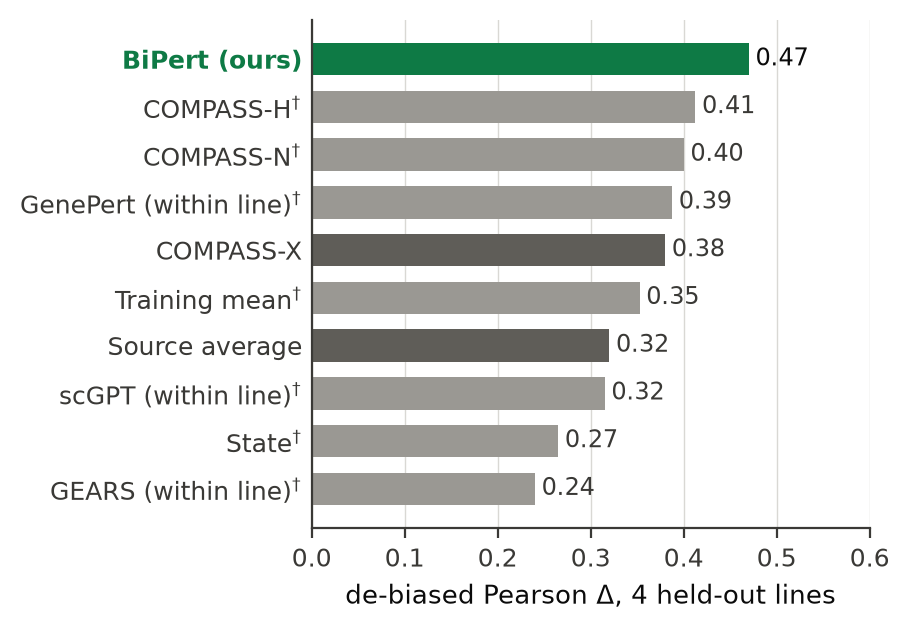

Preprint, 2026
BiPert: How Far Can Linear Go?
A unified linear framework for single-cell perturbation modelling

Large CRISPR screens measure how thousands of gene knockdowns change the state of a cell, but only in a few cell lines. Two questions follow. Can the effect of a knockdown be predicted in a cell line where it was never measured? And, given a perturbed cell, can the gene that was knocked down be identified?
We show that one linear decomposition covers both. BiPert predicts effects in an unseen cell line, BiPert-FS adapts to a new line from as few as ten measured effects, and BiPert-ID identifies the knocked-down gene with no training. Knockdowns whose effects transfer well between cell lines are also the easiest to identify.
Two tasks
Transfer (forward). The effects of all knockdowns are known in several source cell lines. In a new line only a few are measured. Predict the rest.
Identification (inverse). Given the expression of a perturbed cell and the control cells of its line, rank 1,157 candidate genes by how likely each is the one knocked down. The cell line was never seen in training.
Transfer to an unseen cell line
Let yp,ℓ be the effect of knockdown p in cell line ℓ: the mean expression of its cells minus the mean of that line's control cells, over G genes.
BiPert: a low-rank decomposition
BiPert starts from a simple observation: the response to a genetic perturbation contains a component shared across cell lines and a component specific to the context. We model the responses with a low-rank decomposition, so that measurements from different cell lines inform predictions in a new one.
But what if only a handful of knockdowns are measured in the new line? That is what BiPert-FS is for.
BiPert-FS: few measured effects
With the effects of only ten or twenty knockdowns measured there is too little data to fit a model for the new line from scratch. BiPert-FS starts from the average effect in the source lines, ȳp, and corrects it inside a basis Φ of 30 response programs:
The shift b and the matrix C are fitted by ridge regression, with C pulled towards the identity, so with no data the model returns the source average.
Results


Show the few-shot numbers as a table
| Knockdown effects measured in the new line | 10 | 25 | 50 | 100 |
|---|---|---|---|---|
| Source average | 0.320 | 0.320 | 0.320 | 0.320 |
| COMPASS-X | 0.322 | 0.355 | 0.364 | 0.370 |
| BiPert (rank 30) | 0.332 | 0.351 | 0.369 | 0.395 |
| BiPert-FS | 0.355 | 0.361 | 0.362 | 0.366 |
Few-shot transfer. De-biased Pearson correlation, mean of four held-out lines and five random splits (standard deviation across splits about 0.012). BiPert-FS leads with 10 and 25 observations; BiPert leads at 100.
Identifying the knocked-down gene
BiPert-ID: training-free identification
- Prototype. For each knockdown, take its effect in every training line, remove the response that all knockdowns of that line share, and average across lines.
- Query. Take the cell's change relative to its line's controls and remove the response shared by the query cells.
- Score. Add two standardised signals: the cosine between the query and the prototype, and the drop in expression of the candidate gene itself.
Results
Fig. 4: Top-10 recall. Four held-out cell lines (HepG2, Jurkat, K562, RPE1): the share of knockdowns whose true gene is ranked in the top 10 of 1,157 candidates, pseudobulk per knockdown. †Values released by ExPert's authors with their benchmark, averaged over the four lines.
Show the values as a table, with MRR
| Four held-out cell lines | Top-10 recall | MRR |
|---|---|---|
| GEARS† | 0.01 | 0.01 |
| scGPT† | 0.04 | 0.02 |
| GenePert† | 0.06 | 0.03 |
| Own-gene drop only† | 0.18 | 0.16 |
| RNA fingerprinting† | 0.22 | 0.14 |
| Centroid† | 0.30 | 0.20 |
| ExPert† | 0.540 | 0.402 |
| BiPert-ID | 0.656 | 0.521 |
A two-way link between transfer and identification
Recognising a knockdown in a new cell line is like recognising a person by their voice in a new room. If someone's voice sounds the same in every room you have heard them in, you will know them in a new one. If it sounds different each time, you won't.
Transfer predicts identification
Think of each knockdown as having a signature: the pattern of gene changes it causes. Knockdowns with a consistent signature across cell lines are the ones that are easy to recognise in a new cell line.
- Give each knockdown a transfer score, using the training lines only.
- Sort the knockdowns into four equal groups by that score, from the lowest transfer score to the highest.
- Go to the held-out line and count how often each group is identified. For each knockdown, take its cells in the new line and ask the method to name the gene. It counts as a success if the true gene is among the top 10 guesses.
Show the values as a table
| Transfer score | ExPert | BiPert-ID |
|---|---|---|
| Lowest quarter | 19% | 26% |
| Second | 39% | 59% |
| Third | 65% | 82% |
| Highest quarter | 90% | 95% |
Share of knockdowns identified in the top 10 in the held-out line, four held-out cell lines.
This relationship persists after controlling for perturbation effect size: it is not simply that larger responses are easier to identify.
Identification within cell types predicts transfer across them
In an independent screen that activates 1,833 transcription factors in fibroblasts and in RPE-1 cells, a factor that can be identified within both cell types usually transfers between them (25 of 33): its profile in one cell type picks it out among all factors in the other. One that can be identified within neither almost never transfers (8 of 1,720). To avoid inflating the agreement through guide-specific effects, the guide RNAs used for identification within a cell type are disjoint from those used to measure transfer across them.
References
- Sharma A., Zelezniak A. How Far Can Linear Go? BiPert, a Unified Framework for Single-Cell Perturbation Modelling. arXiv:2611.31227, 2026.
- Ahlmann-Eltze C., Huber W., Anders S. Deep-learning-based gene perturbation effect prediction does not yet outperform simple linear baselines. Nature Methods, 2025.
- Liang H., Singh R. COMPASS: Component-Wise Inference of Shared and Gene-Specific Perturbation Response. bioRxiv, 2026.
- Schwartz L. et al. ExPert infers causal perturbations from cell states across biological and clinical contexts. bioRxiv, 2026.
- Southard K. M. et al. Comprehensive transcription factor perturbations recapitulate fibroblast transcriptional states. Nature Genetics, 2025.